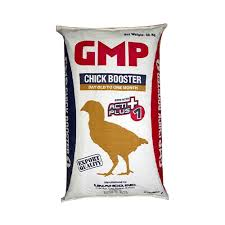

| 🏆 GMP 1 POULTRY FEEDS 🏆 |
|  |
GMP 1 💰 Price: ₱42 per kilo 📌 Description: GMP 1 is a high-quality poultry feed formulated to promote steady growth, strong bones, and overall vitality. Perfect for daily feeding to maintain healthy poultry. ✅ Key Benefits: - Encourages balanced growth - Strengthens stamina and immunity - Improves feather quality - Supports healthy digestion - Suitable for regular feeding 🐔 Best For: Broilers, native chickens, and laying hens 🕒 Feeding Guide: Provide daily with clean water. Adjust portions based on age and size of the birds. |